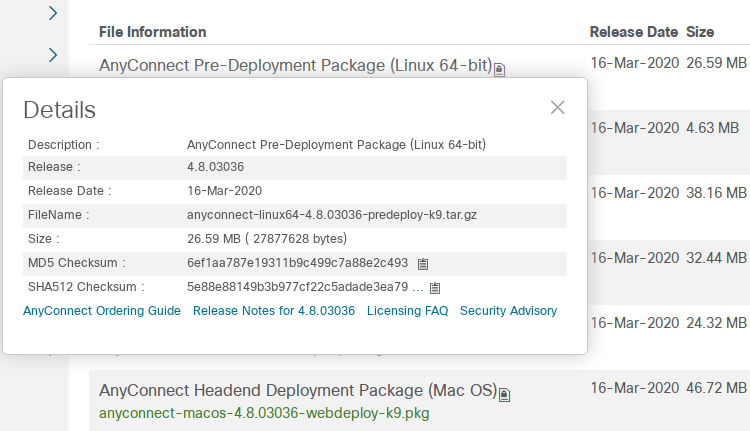
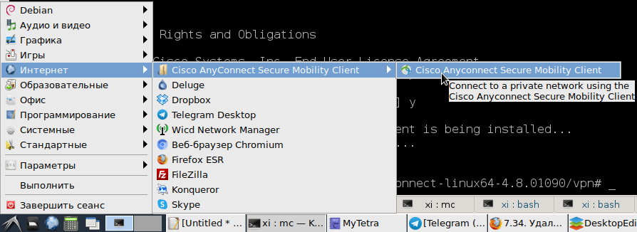
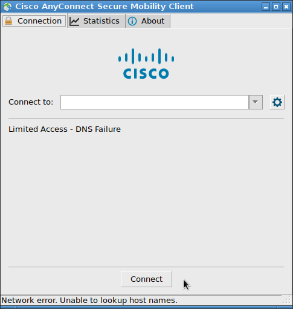

Получение Cisco AnyConnect
Компания Cisco - очень странная компания, традиционно вставляющая палки в колеса своим собстевенным клиентам. Казалось бы, компания производит аппаратное обрудование, поэтому программное обеспечение завязано именно на аппаратуру Cisco. Если нет аппаратуры Cisco, то воспользоваться ПО Cisco не получится, оно даром никому не нужно. Но нет: в компании Cisco решили, что даже клиентское программное обеспечение должно выдаваться только по заранее купленным подпискам, и закрыто для скачивания логином-паролем. Но и это еще не все: даже имея логин и пароль для личного кабинета на сайте Cisco, и имея оплаченную подписку, совершенно не факт, что клиентское ПО будет доступно. Какие там хитросплетения корпоративного маразма работают - мало кому ведомо. Поэтому есть два пути: либо потратить пару суток на пинания админов и бодания с техподдержкой и таки получить файлы клиента, либо решать свои проблемы самому и быстро.
Если вы думаете, что вы один такой, то нет: клиенты Cisco постоянно попадают в ситуацию, когда нужно получить доступ к серверу предприятия, а админы не подготовились заранее. Или подготовились, но так как админы оказались вендо-админами, то и доступ в сеть умеют делать только через Windows, ведь "других операционных систем на свете не бывает". Лучшее что вам предложат - это пойти и за свои деньги приобрести лицензию на Windows и установить ее, или предложат поставить пиратскую версию Windows: все равно никто не узнает. Не хотите так? Тогда проблему с подключением вам придется решать самостоятельно.
Итак, что можно сделать? Если покопаться, то в разных закоулках интернета можно найти выложенные клиенты Cisco различных версий. Они лежат на торрентах, или частенько выложены разными компаниями в публичных каталогах веб-серверов, и по каким-либо причинам проиндексированы поисковиками. Например, на момент написания этой статьи, клиенты нашлись на сайтах различных сетевых интеграторов, и даже на сервере самого крупного российского интернет-магазина: видимо, они лежат там для возможности установки удаленного соединения между сотрудниками и серверами предприятия. Файл с клиентом для Linux называется примерно так:
anyconnect-linux64-4.6.03049-predeploy-k9.tar.gz
(Я намеренно не даю прямые ссылки на скачивание файлов, чтобы у тех, кто выложил файлы клиентов, не возникло лишних проблем. Просто пользуйтесь поисковиками, и все найдете).
Понятно, что доверять таким источникам программного обеспечения нельзя. Мало ли какие злоумышленники выложат модифицированно ПО Cisco, которое будет сливать на сторону логины-пароли и ключи доступа к сети предприятия. Поэтому поступить можно следующим образом. На официальном сайте Cisco можно просматривать информацию о пакетах клиентского ПО без ввода логина-пароля. Вот, например, ссылка на просмотр ПО AnyConnect:
https://software.cisco.com/download/home/286281283/type/282364313/release/4.8.03036
Сам пакет вам не дадут скачать, но посмотреть о нем инфу можно. В информации будет, в том числе и контрольные суммы по стандартам MD5 и SHA512:

Таким образом, взяв инсталляционный пакет из стороннего источника, всегда можно проверить, является ли он доверенным пакетом.
Установка AnyConnect на Linux
Распаковав *.tar.gz с VPN-клиентом, нужно просто, от рута, запустить скрипт:
vpn_install.sh
Далее нужно согласиться с лицензионным соглашением, и клиент будет установлен. Его можно будет найти в основном меню окружения рабочего стола:

При его запуске будет отображен графический интерфейс с настройками соединения:

Наверняка, при попытке соединения к серверу предприятия, данный клиент заблокирует установку соединения, так как сервер предприятия определится как недоверенный (untrusted). Но он сразу же предложит открыть настройки и снять блокировку на подключение к недоверенным серверам. В результате такой настройки и введения правильных данных подключения, VPN-канал будет установлен.
Наименование интерфейса будет следующим: cscotun0.
Замена Cisco AnyConnect на свободное ПО
Ещё, вместо пропиетарного AnyConnect можно использовать клиент openconnect. Достаточно ввести команду:
sudo openconnect -s /etc/vpnc/vpnc-script vpn-server —user=user-name
В этой команде надо только подставить адрес сервера и имя пользователя.
Зачем указывать путь к vpnc-script - не совсем понятно, но это дефолтный скрипт, поставляемый вместе с openconnect. Никаких конфигов редактировать не нужно. Команда запросит пароль, а потом, при необходимости, код от двухфакторной авторизации. И если все данные будут корректными, то будет создано сетевое устройство tunX. Увидеть его можно с помощью команды:
ip addr
После выполнения вышеуказанных действий вся работа с сетью автомагически будет проходить через этот виртуальный интерфейс.